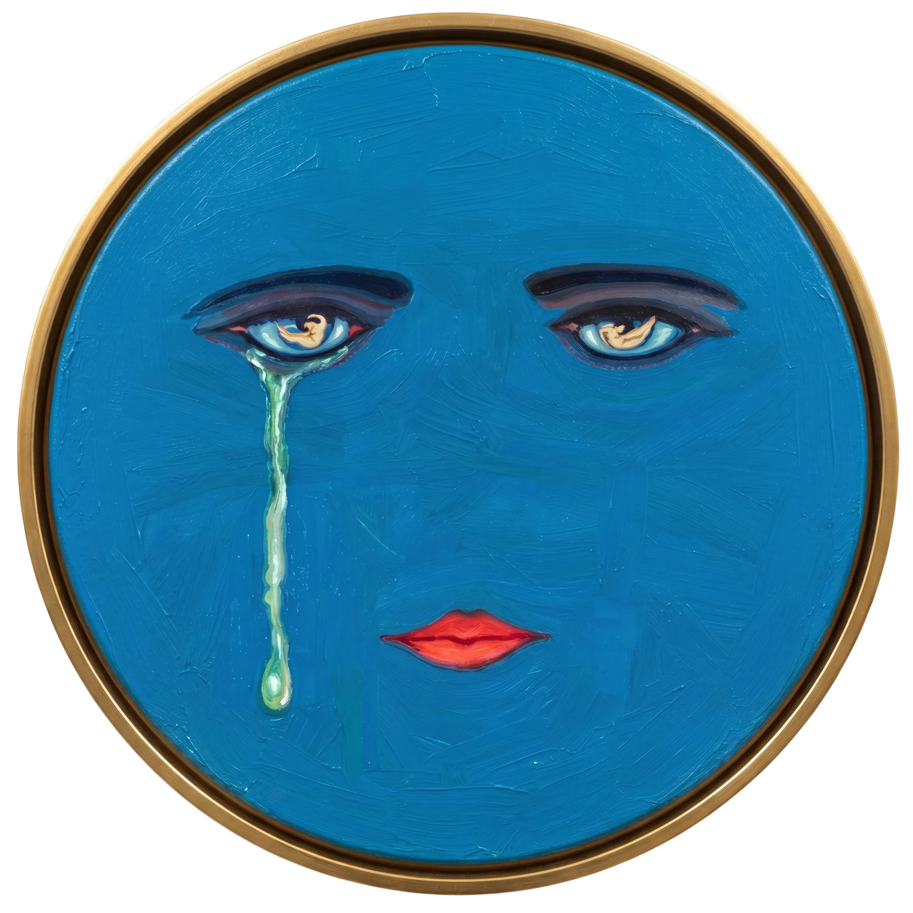

Alice in Wonderland
Wonderland
The Great Gatsby
Gatsby
The Little Prince
Little Prince
Letters to a Young Poet
Young Poet
Select a book
Pour a glass
Strike a match

∙ a daily reckoning ∙
The
Green
Light
◆
Pour a glass
One line from West Egg
Watch the light.
∙ or by the glass ∙
· today's pours ·
Click to return
Another glass
Save
⇗ Share
Click to return
∙ esc or click to return ∙